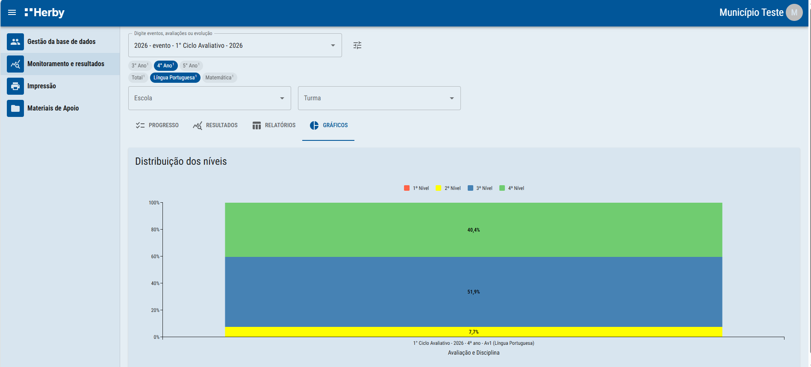
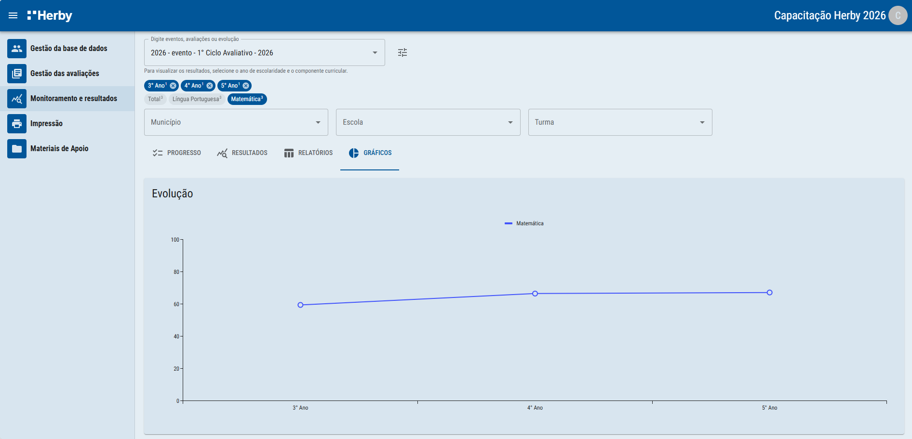
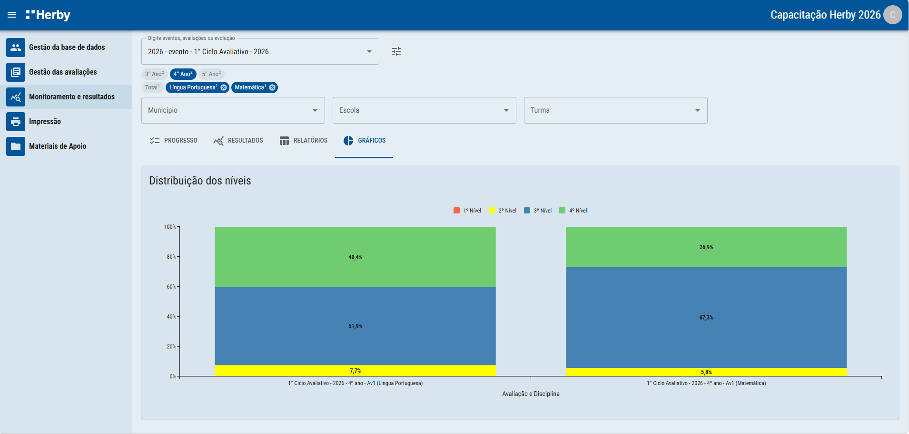
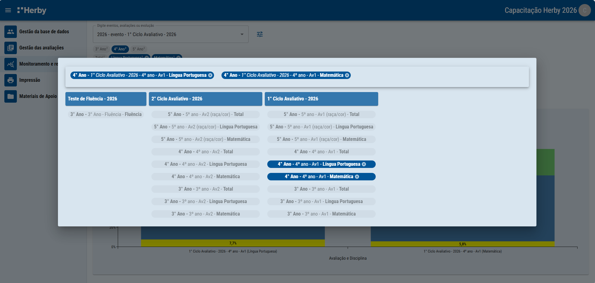

Distribuição dos estudantes por nível, evolução do desempenho e comparação entre eventos avaliativos.
Já na aba gráficos, será possível visualizar as distribuição dos estudantes em níveis e também os gráficos de evolução da média de desempenho.


É possível também comparar resultados entre eventos avaliativos, usando o botão de seleção manual.

